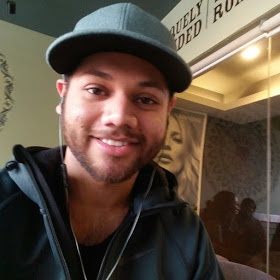

Jasmeet's Résumé

Industrial experience (Work experience)
National Lab, Phagwara
Franchisee (April 2021-present)
- Currently, heading a team of two lab assistants and a public relations officer
- Managing operations regarding various lab equipment and techniques
- Expanding operations on the equipment side to better accommodate patients whose samples need to be outsourced
Inder Scans and Diagnostic Centre, Phagwara
General Manager (August 2017- March 2021)
- Handled the finances and paperwork related to the daily intake of OPD patients
- Supervised the various ongoing machine operations like X-Ray, CT and Ultrasound Scans
- Oversaw lab work related to the medical field and later diversified it
Research and Publication
Comparative analysis of tertiary treatment processes (Jan-Dec 2016)
- Operation and chemical analysis of secondary treatment processes in wastewater treatment (anaerobic UASB and aerobic ASP
- Understanding the performance efficiencies of tertiary treatment processes (Chlorination by bleaching powder and UV irradiation
- Final work on the optimization of the tertiary treatment process parameters to meet the stringent discharge levels as provided by the CPCB.
Industrial training
CSIR-CSIO, Chandigarh
B.Tech Summer training (May-July 2015)
- Research work based on the pre-existing principle of Surface Plasmon Resonance in Nanophotonics in combination with Antigen-Antibody Interactions.
- Coating of Gold Nanolayer by Sputtering onto fibre optic cables (125 - 250μm), and Gold Nanoparticles by Silane treatment onto a glass substrate.
- Work also included Operation and calibration of the DC-Magnetron Sputtering Unit.
- Real-time spectroscopy, contact surface profiling, atomic force microscopy (AFM) of coated fibres to determine the thickness of gold nano layers (6-32 nm) and verification of results by scanning electron microscopy (SEM) imaging
Positions of responsibility
IIT Delhi portal wiki
April 2014
- Designed a IIT portal wiki page on the Rise of Novels heading a team of 8
Projects
Fabrication Of bio-sensor for online estimation Of biomass concentration using impedimetric method
October 2014
- Constructed a rapid and inexpensive portable device consisting of disposable electrodes.
- Calibrated the dependence of impedance on standard samples measuring frequency of the sine wave generated.
- Measured the biomass for the real-time sample concentrations using standard impedence curve.
Light Guide Tube for transmittance of solar light indoors
April 2014
- Constructed a source of lighting without battery or solar-powered cells using a system that collects solar light using
parabolic reflector directing it through pipes with high transmittance efficiency for visible light range.
Technical skillset
- Python, HTML, CSS, MySQL, Node, React, MongoDB, Web3 - 2023
- Java - 2011
- Excel - 2021
- MATLAB, MATCONT, AUTOCAD - 2012-2014
Scholastic achievements
National olypmiads
- Macmillan's Science Olympiad, UNSW, Australia
- 2005: Distinction (90th percentile)
- 2006: Distinction (90th percentile)
- 2007: Distinction (90th percentile)
- Macmillan's Maths Olympiad, UNSW, Australia
- 2006: Distinction (90th percentile)
Extracurricular activities and hobbies
- Participant - 200 km Randonneuring (Delhi-Panipat-Delhi) Jan 2016
- Winners - Inter-Hostel Football - IIT Delhi April 2015
- Participant - Institute Dance Production - IIT Delhi March 2012
- Runners-up - Inter-house Basketball April 2011
- Runners-up - Inter-house Table Tennis Nov 2010
- Shyamak Dawar Institute of Performing Arts - Annual function Sep 2007